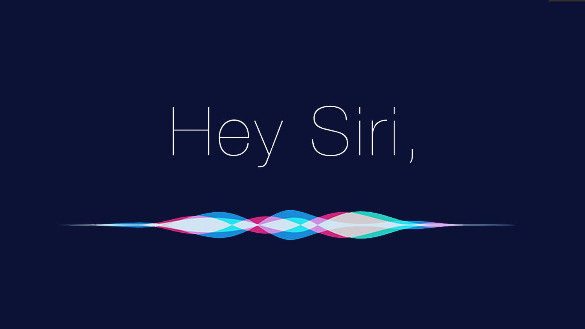

Siri is the digital assistant that is part of Apple Inc.´s iOS, iPadOS, watchOS, macOS, tvOS, audioOS, and visionOS operating systems. It uses voice queries, gesture based control, focus-tracking and a natural-language user interface to answer questions, make recommendations, and perform actions by delegating requests to a set of Internet services. With continued use, it adapts to users´ individual language usages, searches, and preferences, returning individualized results.
What Is a Digital Assistant?
What´s the Difference Between a Digital Assistant and a Chatbot?
Chatbots are computer programs that simulate and process written or spoken human conversation so that people can interact with digital devices as if they were communicating with a real person. If you speak into your phone to order your favorite coffee drink, you are interacting with a chatbot. You can also request a ride from a ridesharing service by using one of the service´s chatbots. These are relatively simple "conversations."
A digital assistant is an advanced type of chatbot that can handle more complex interactions in a conversational way. A digital assistant, for example, can respond to a complex request such as, "Schedule a flight to Phoenix for me next Sunday using my usual seating preferences, and arrange transportation to and from the airport." To respond to this request, the digital assistant will need to access multiple sources - a capacity that the ordinary chatbot does not possess.

As of now, Siri can understand and respond in more than 20 languages, making it a truly global assistant. Some of the languages Siri supports include English, Spanish, French, German, Italian, Mandarin Chinese, Japanese, Korean, Russian, and Arabic, among others.
Click the "play" icon to hear the voice of Siri!
For further information, click here to go to Apple's official website.